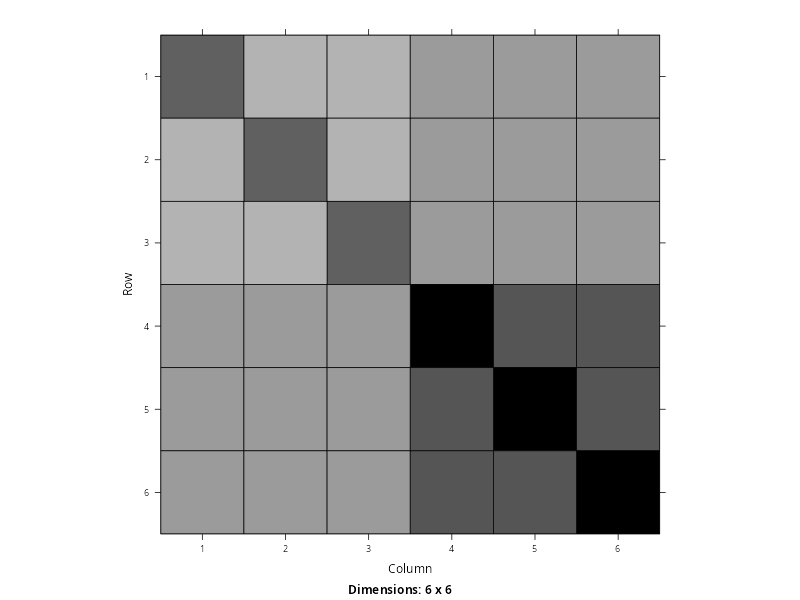
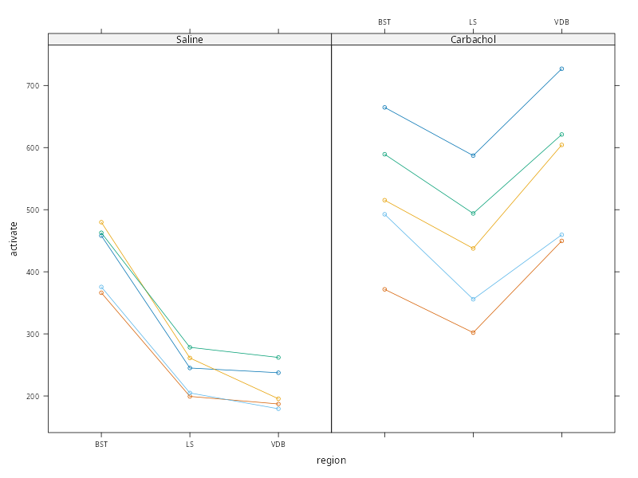
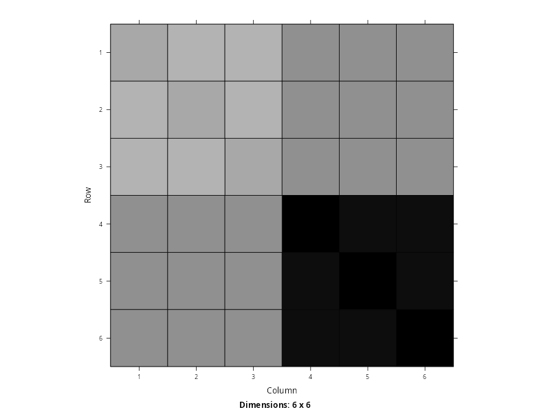
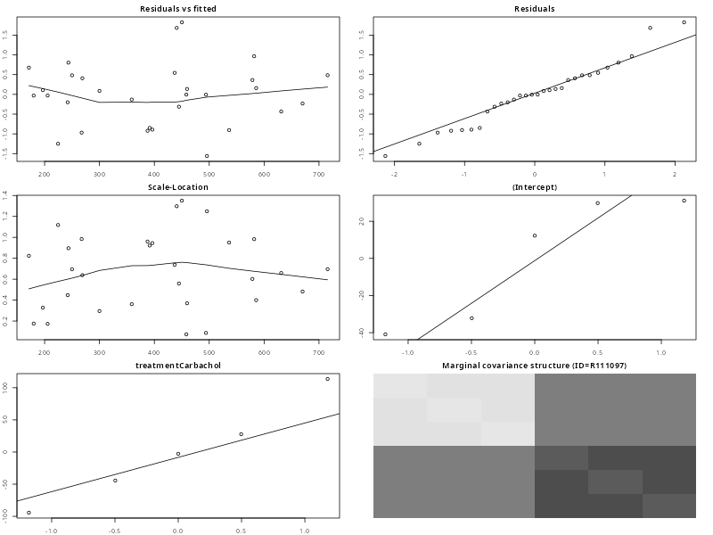
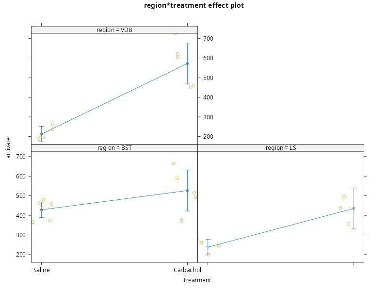

PCHN63112 Workshop: Repeated Measures with Replication Example#
In this example, we will examine building a mixed-effects model for repeated measurements when replications of the repeats are available. This will provide the opportunity for a more general covariance structure than we have seen in some of the previous repeated measurement examples.
Loading Packages#
We will start by loading all the packages that we need at the beginning. This will tidy-up the output, allow any messages or warnings to not clutter up the rest of the output and not bury any packages within the main body of the analysis. We also use source() on the file plot-lme.R. This needs to be in the current working directory and will bring the custom function plot.lme() into scope.
library('lattice') # plotting functions
library('Matrix') # covariance extraction and visualisation
library('nlme') # mixed-effects modelling
library('car') # Asymptotic ANOVA tests
library('emmeans') # Follow-up tests
library('effects') # Effects plots from the model
source('plot-lme.R') # custom plot.lme() function for making assumptions plots
Loading required package: carData
Welcome to emmeans.
Caution: You lose important information if you filter this package's results.
See '? untidy'
Use the command
lattice::trellis.par.set(effectsTheme())
to customize lattice options for effects plots.
See ?effectsTheme for details.
The Rat Brain Data#
The data we will use concern measurements of nucleotide activation from the brains of five male adult rats. These measurements were taken using autoradiography after treatment with the drug carbachol and after treatment with saline. Three brain regions were chosen for measurement: the bed nucleus of the stria terminalis (BST), the lateral septum (LS) and the diagonal band of Broca (VDB). The outcome variable represents the mean optical density measured in each brain region and interest primarily lies in the effect of carbachol on nucleotide activation.
Importantly, you do not need to understand the biology of any of this. In purely statistical terms, it does not matter what any of the variables mean precisely. We can just think of them generically as an outcome and treatments applied to different units. The actual theory behind any of the decisions in this experiment is the business of the biologists who performed it. We are just here to analyse it. This is part of the skill of applying general methods to different contexts.
The data are available to download from here. Once downloaded to the current working directory, the code below will read the data in and then print the values for the first two rats.
ratbrain <- read.table('rat_brain.dat', header=TRUE)
print(ratbrain[1:12,])
animal treatment region activate
1 R111097 1 1 366.19
2 R111097 1 2 199.31
3 R111097 1 3 187.11
4 R111097 2 1 371.71
5 R111097 2 2 302.02
6 R111097 2 3 449.70
7 R111397 1 1 375.58
8 R111397 1 2 204.85
9 R111397 1 3 179.38
10 R111397 2 1 492.58
11 R111397 2 2 355.74
12 R111397 2 3 459.58
As this is already long-formatted, we just need to convert the relevant variables to factors. We also choose to relabel both treatment and region to make their meaning clearer.
ratbrain$treatment <- as.factor(ratbrain$treatment)
ratbrain$region <- as.factor(ratbrain$region)
ratbrain$animal <- as.factor(ratbrain$animal)
levels(ratbrain$treatment) <- c('Saline', 'Carbachol')
levels(ratbrain$region) <- c('BST', 'LS', 'VDB')
We now just briefly summarise all the variables to check everything is in order.
summary(ratbrain)
animal treatment region activate
R100797:6 Saline :15 BST:10 Min. :179.4
R100997:6 Carbachol:15 LS :10 1st Qu.:261.4
R110597:6 VDB:10 Median :406.6
R111097:6 Mean :402.1
R111397:6 3rd Qu.:493.6
Max. :727.0
Data Structure#
Although we already know what structure these data have, we will run through the logic for completeness.
Firstly, we need to determine our unit of analysis. In this example, our model is trying to explain nucleotide activation after application of different treatments in the brains of rats. The entities that our model is describing are brains of rats, so our units of analysis are the rats themselves (or the rat brains themselves, depending upon how you want to think of it).
Secondly, we determine what each row of the long-formatted data represents in relation to the units of analysis. Examining the first few rows
head(ratbrain)
animal treatment region activate
1 R111097 Saline BST 366.19
2 R111097 Saline LS 199.31
3 R111097 Saline VDB 187.11
4 R111097 Carbachol BST 371.71
5 R111097 Carbachol LS 302.02
6 R111097 Carbachol VDB 449.70
we can see that each row corresponds to a single unit (rat) measured multiple times. So these are either repeated measurements or longitudinal data. The difference lies in whether there is an explicit measurement of time here. As we can see, the different repeats are indexed by the levels of region, but not by any index of time. There is no sense of order in the repeats, nor any metric of the gap between measurements. As such, this is simply repeated measurements.
Finally, we need to determine whether there are any clustering variables that represent a higher-order dependency structure in these data. From the data description we know that there are no variables of this sort, but we can also see that this is true from the data alone. Examining the rows above, we can see that there are no variables that are constant within each rat. As such, there are no candidates for either clustering variables or grouping variables. The experiment is purely within-subject. Based on this, we can construct the following table of the levels of these data, using the guidance in the lesson
Data Type |
Repeated Measures |
|---|---|
Dataset |
|
Level 1 |
Repeated measurements |
Level 2 |
Rat |
Level 3 |
- |
Despite no clustering existing here, we could imagine such a structure if this experiment were a multi-centre study, where the same measurements were taken using different rats at different labs around the country. In this case, lab could be a clustering variable, as it is conceivable that measurements from rats in the same lab may be dependent in some way (same scientists, same lab environment, same equipment, same living standards etc.) We do not have this here, but this situation is certainly possible. This would make these data clustered repeated measurements, with lab appearing at Level 3. This is not a type we have described, but which remains perfectly analysable using the examples you will see across these workshops.
Model Notation#
In order to facilitate consistency across the examples in these workshops, we will represent all models using more general regression notation. For instance, whether a variable is categorical or continuous, it will be written in the model as e.g. \(\beta_{1}x_{i1}\). In the categorical case, it will be implicitly assumed that \(x_{i1}\) is a dummy variable. Although this will make the notation for models that only contain categorical variables busier, it will make things much clearer when we have models that contain both categorical and continuous predictors. In addition, we will be using variable labels going forward, rather than generic notation (e.g. \(\beta_{1} \times \text{treatment}_{j}\) rather than \(\beta_{1}x_{i1}\)). This should hopefully make it clearer which variable each term relates to when writing the model down.
Model Building#
To build a model of this dataset, we use the 3-step procedure outlined in the lesson. We assume at this point that the data has been investigated, wrangled, cleaned and is ready for modelling.
Step I: A Single Dependency Structure#
We start by isolating a single dependency structure which, in this example, is a single rat. We choose the first rat in the dataset, who is indexed using animal == 'R111097'. Based on the summaries earlier, the data are fully balanced within each rat, so the particular rat chosen will not make a difference here. We subset the data below
ratbrain.1 <- subset(ratbrain, animal=='R111097')
print(ratbrain.1)
animal treatment region activate
1 R111097 Saline BST 366.19
2 R111097 Saline LS 199.31
3 R111097 Saline VDB 187.11
4 R111097 Carbachol BST 371.71
5 R111097 Carbachol LS 302.02
6 R111097 Carbachol VDB 449.70
As indicated earlier, we have no grouping variables or higher-level clustering variables here. So, for this model, we only have the option of using treatment and region as predictors. For the moment, we will treat region only as an index of the replications within each level of treatment. We do this for simplicity, particularly to indicate more clearly how replications enter the model. We will come back to the possibility of using region later. For now, the data we will work with is
ratbrain.1 <- subset(ratbrain, animal=='R111097', select= -region)
print(ratbrain.1)
animal treatment activate
1 R111097 Saline 366.19
2 R111097 Saline 199.31
3 R111097 Saline 187.11
4 R111097 Carbachol 371.71
5 R111097 Carbachol 302.02
6 R111097 Carbachol 449.70
Our basic model for a single rat is therefore
in ANOVA notation, which is equivalent to
in generic regression notation, with \(x_{ij}\) defined as a dummy variable where
To make this clearer, we can use variable labels, giving
where \(\text{treatment}_{j}\) is the dummy value associated with level \(j\) of the treatment (either a 0 or a 1).
For completeness, we can check that this model fits in R
ratbrain.1.lm <- lm(activate ~ treatment, data=ratbrain.1)
summary(ratbrain.1.lm)
Call:
lm(formula = activate ~ treatment, data = ratbrain.1)
Residuals:
1 2 3 4 5 6
115.320 -51.560 -63.760 -2.767 -72.457 75.223
Coefficients:
Estimate Std. Error t value Pr(>|t|)
(Intercept) 250.87 50.78 4.941 0.00781 **
treatmentCarbachol 123.61 71.81 1.721 0.16030
---
Signif. codes: 0 ‘***’ 0.001 ‘**’ 0.01 ‘*’ 0.05 ‘.’ 0.1 ‘ ’ 1
Residual standard error: 87.95 on 4 degrees of freedom
Multiple R-squared: 0.4255, Adjusted R-squared: 0.2819
F-statistic: 2.963 on 1 and 4 DF, p-value: 0.1603
Given that there are 3 measurements of each treatment, we should have no concerns about fitting this model.
Step II: Expand to Multiple Structures#
In our second step, we expand the model above to multiple rats. We index these using the same notation we used in the lesson, to make it clear which terms belong to a particular rat. We start with the most general case of allowing every term to vary by-rat, giving us
We can now reason more carefully about the parameters \(\beta_{0}^{(k)}\) and \(\beta_{1}^{(k)}\). This can be done in a more data-driven fashion by plotting the data and reasoning about the patterns we can see. For now, we will stick to using the theoretical implications of our decisions, but we will see this alternative illustrated further below.
Random Intercept Decision#
As mentioned in the lesson, the most basic form of mixed-effects model will always contain a random intercept term. There is often little sensible reason to drop this, unless we are retuning to the normal linear model with no dependencies. In this context, keeping \(\beta_{0}^{(k)}\) random encodes the idea that each rat is a random sample from a distribution of rats. Without this, the model would not consider each rat to be a random draw. In other words, we would be implying that we had all the rats we were interested in within this dataset. This may be justifiable in a case study of only a set of very specific individuals, but does not apply here. As such, we allow the term \(\beta_{0}^{(k)}\) to vary from rat-to-rat.
Random Slope Decision#
In terms of \(\beta_{1}^{(k)}\), we have more of a choice. Keeping this term random encodes the idea that the difference between carbachol and saline is specific to each individual rat. Depending upon their biology, the degree of activation difference between the two treatments will shift on a per-rat basis. In some rats, this difference may be very small and in others it may be much larger. If we had infinite samples of infinite rats, the treatment effect across rats would not converge on the same value. Instead, each rat would have its own individual treatment effect. In this sense, any deviations we see from the population value of treatment are not simply sampling noise, they reflect something fundamental about differences between the rats.
The alternative is to set \(\beta_{1}^{(k)}\) to be fixed. This would encode the idea that the difference between carbachol and saline is universal and does not depend upon a specific rat. This is a simple fact of biology. The treatment impacts the brain in exactly the same way, irrespective of the specific rat. Any variation we see is simply sampling noise due to imperfect measurement and has nothing to do with a given rat. If we had infinite samples of infinite rats, the treatment effect across rats would all converge on the same value. In other words, the specific rat does not matter.
As mentioned in the lesson, in cases where we are uncertain we can use model comparisons to see what the data suggests. In this case, we will keep \(\beta_{1}^{(k)}\) random, but will assess the impact of this decision using the data later. Because there are multiple measurements of each level of treatment within each rat, the data also supports fitting this model. As such, our final Level 1 model is
Step III: Write the Higher-level Models#
In our final step, we take our Level 1 model and we expand each of the terms at the next level of the hierarchy. As mentioned in the lesson, irrespective of whether we have chosen to make a term fixed or random, it is useful to keep the per-structure indexing. The decision around whether a term is fixed or random emerges in terms of whether the 2nd-level models have random error or not.
For the current example, we express 2nd-level models for both \(\beta_{0}^{(k)}\) and \(\beta_{1}^{(k)}\). Because these terms are both treated as random, these models come from expressing each term as a normal random variate with a population-level mean effect and some variance
which we re-write in mean + error format, to integrate into our general model specification. This gives
The only additional step is whether we have more variables to integrate into the Level 2 models of the mean and the treatment slope. This would require additional grouping or clustering variables in this dataset, which we do not have. So, at this point, our multilevel model specification is complete.
Fitting the Model in R#
In order to fit the multilevel model given above, we need to collapse it to mixed-effects form. Using the equalities at Level 2 and integrating them into Level 1, we get
To see how to tell lme() about the random effects, we isolate the random components (i.e. the error terms)
and remove the final errors, as they do not need to be explicitly specified
If we now change the notation to make the conditional element of these terms clearer
we can easily translate this specification into 1 + treatment|animal. This comes from the fact that the specification above is essentially a simple regression model containing the variable \(\text{treatment}_{j}\), but fit to each rat separately.
Our model is therefore
ratbrain.lme <- lme(fixed = activate ~ 1 + treatment,
random = ~ 1 + treatment|animal,
data = ratbrain,
control = lmeControl(opt='optim')
)
print(ratbrain.lme)
Linear mixed-effects model fit by REML
Data: ratbrain
Log-restricted-likelihood: -172.1075
Fixed: activate ~ 1 + treatment
(Intercept) treatmentCarbachol
292.8480 218.5853
Random effects:
Formula: ~1 + treatment | animal
Structure: General positive-definite, Log-Cholesky parametrization
StdDev Corr
(Intercept) 29.27835 (Intr)
treatmentCarbachol 70.46590 0.976
Residual 91.67909
Number of Observations: 30
Number of Groups: 5
Notice that we had to change the optimiser here because the default failed to converge. Also notice that the random-effects structure has led to the estimation of three variances. One for the animal mean, one for the effect of treatment and one for the residuals. We can see the implications of this for the covariance structure using
Sigma.1 <- getVarCov(ratbrain.lme, type='marginal', individual='R111097')$`R111097`
print(Sigma.1)
image(as(Sigma.1,'Matrix'))
1 2 3 4 5 6
1 9262.2770 857.2216 857.2216 2871.272 2871.272 2871.272
2 857.2216 9262.2770 857.2216 2871.272 2871.272 2871.272
3 857.2216 857.2216 9262.2770 2871.272 2871.272 2871.272
4 2871.2716 2871.2716 2871.2716 18255.821 9850.765 9850.765
5 2871.2716 2871.2716 2871.2716 9850.765 18255.821 9850.765
6 2871.2716 2871.2716 2871.2716 9850.765 9850.765 18255.821

In general, we can see that the measurements from an individual rat are all considered correlated. This structure is then further split into a block for the saline treatment (rows/columns 1-3) and a block for the carbachol treatment (rows/columns 4-6). All measurements within each level of treatment are considered equally-correlated, but these are allowed to differ for saline-saline, carbachol-carbachol and saline-carbachol pairs. Finally, the difference in shading between saline and carbachol implies that the variance of the saline treatment is much lower than the variance of the carbachol treatment.
Alternative Models#
Before we get to checking assumptions and performing inference, it is a good idea to consider other model forms. Effectively, we want to get to our final model before performing these steps. This is both practical, as it prevents multiple confusing round of assumption checking and inference, and is also a guard against bias, particularly if we know the results of a given model specification. This sequence is therefore a self-imposed protection against being swayed by \(p\)-values more than the logic of building a sensible model.
Including region in the Model#
As discussed earlier, we left region out of our initial model for simplicity. However, we now consider whether to include this additional factor.
In terms of reasoning, it would seem sensible to consider the fact that different parts of the brain may respond differently to the effects of treatment. These regions will differ in size and cytoarchitectural composition which could easily impact the effectiveness of the treatment. Including region in our model would allow us to assess whether these brain region differ fundamentally in levels of activation, as well as allowing us to entertaining the possibility of a treatment:region interaction. This would provide further insight into whether the effectiveness of the treatment depends upon the brain region that is measured. For instance, the treatment may be more targeted compared to our current assumption of a global effect of treatment in the brain.
In order to integrate region, we go back to our Level 1 model of a single rat and entertain the following model
where \(i\) now indexes the region. Because region has 3 levels it needs two dummy variables to represent it. So the definitions of \(\text{region}_{1i}\) and \(\text{region}_{2i}\) are
If we now expand this model to multiple rats, we have
So, we now have decisions to make about whether 6 terms should be random or not. We will stick to treating both \(\beta^{(k)}_{0}\) (the intercept) and \(\beta^{(k)}_{3}\) (the treatment slope) as random, given the discussions from earlier. So, our new decision is whether to treat the remaining terms as random. Starting with the main effects of region \(\left(\beta^{(k)}_{1}, \beta^{(k)}_{2}\right)\), if we treat these terms as random this would suggest that differences in activation between brain regions are rat-specific. For instance, in one rat the activation of the BST is larger than the VDB, whereas in another rat the regions are the other way around.
We can reason about whether this is sensible assumption. On the face of it, it may not be because we assume that regions have very similar cytoarchitecture across different rats (this is why they are consider the same region, even in different brains). This means that they should react to the treatment in a very similar pattern, irrespective of the specific rat. However, we can also look at the data and see what it suggests.
xyplot(
activate ~ region|treatment, # x-axis=region, panel=treatment
groups = animal, # separate lines per-animal
data = ratbrain, # data
type = "b" # lines with points
)

Notice that the pattern across the brain regions within each panel is very similar across the rats. For instance, under carbachol, notice that the v-shape is largely the same for each rat. This suggest that the differences in measurement between these regions does not differ on a per-rat basis. The slight differences we see could simply be sampling error. There is not enough variation here to suggest that this is something that differs fundamentally from rat-to-rat. As such, this suggests that region can defensibly be treated as a fixed-effect.
On the back of this decision, it makes little sense to treat the interaction parameters as random, given that the terms involved in the interaction are fixed. The interaction can be seen in the plot above because the pattern of responses across the regions is different between the two panels. One is L-shaped and one is V-shaped. If the lines were V-shaped in both panels, there would be no interaction. If we suggest that the interaction differs across rats, then there would need to be a different change in shape between the two panels for each rat. Perhaps one rat has a flat line in one panel and a V-shape in the other. Perhaps another rat has an L-shaped pattern in both panels. This then implies that the shapes within a single panel must be different between the rats, but this cannot be the case if region is fixed. As such, unless both terms are random, it makes limited sense to try and include a random interaction. In addition, even if we had treated region as random, the data would not support inclusion of the interaction term in the random effects. Because of all of this, we will also treat region:treatment as a fixed-effect.
Taking all this together, our model that includes region is
noticing that those terms that are fixed do not contain random error terms in their 2nd-level models. We could also express this by collapsing those fixed terms back into Level 1
The mixed-effects specification is then
where the random effects have remained the same as our earlier model. Indeed, the only change here is that region and region:treatment have entered the mean function. We can specify this in R using
ratbrain.lme <- lme(fixed = activate ~ 1 + region + treatment + region:treatment,
random = ~ 1 + treatment|animal,
data = ratbrain,
control = lmeControl(opt='optim')
)
print(ratbrain.lme)
Linear mixed-effects model fit by REML
Data: ratbrain
Log-restricted-likelihood: -124.5952
Fixed: activate ~ 1 + region + treatment + region:treatment
(Intercept) regionLS regionVDB treatmentCarbachol regionLS:treatmentCarbachol
428.506 -190.762 -216.212 98.204 99.322
regionVDB:treatmentCarbachol
261.822
Random effects:
Formula: ~1 + treatment | animal
Structure: General positive-definite, Log-Cholesky parametrization
StdDev Corr
(Intercept) 35.83670 (Intr)
treatmentCarbachol 79.82041 0.801
Residual 23.21427
Number of Observations: 30
Number of Groups: 5
We can also re-examine the covariance structure. It will not differ in its pattern, because the random-effects have not changed, but it will differ in its values because the mean function is now different.
Sigma.1 <- getVarCov(ratbrain.lme, type='marginal', individual='R111097')$`R111097`
print(Sigma.1)
image(as(Sigma.1,'Matrix'))
1 2 3 4 5 6
1 1823.172 1284.269 1284.269 3575.472 3575.472 3575.472
2 1284.269 1823.172 1284.269 3575.472 3575.472 3575.472
3 1284.269 1284.269 1823.172 3575.472 3575.472 3575.472
4 3575.472 3575.472 3575.472 12776.875 12237.973 12237.973
5 3575.472 3575.472 3575.472 12237.973 12776.875 12237.973
6 3575.472 3575.472 3575.472 12237.973 12237.973 12776.875

We can see that the block associated with the carbachol treatment is very dark because the variance in this treatment is much higher relative to the saline treatment. We can also see this in the plot from earlier where the lines were very spread out under carbachol and much closer together under saline.
Simplifying the Random Effects#
Now that we have our fixed-effects and random-effects sorted, we could leave the model as it is. However, it is always worth checking whether a more parsimonious model may be as equally effective. Generally, this comes down to seeing whether a simpler random effects structure is justifiable. As present we are using 1 + treatment|animal, so our decision is whether we keep this structure or whether we could simplify it to 1|animal. Although we reasoned earlier that the effect of treatment could differ across rats, the plot from earlier did not suggest that this was particularly strong. All the lines in the left panel seemed to increase by a similar amount in the right panel. The order of the lines was largely similar as well. So there is reason to think that treatment could be treated simply as fixed.
In order to check, we compare the two possible structures below. Of importance is setting method='ML' to make sure this comparison is meaningful. In addition, rather than requesting the full model comparison output of anova(), we just work with the BIC by using the BIC() function. We also introduce use of the update() function, which allows us to take an existing model and change some of the fitting options. This is helpful when you want to keep everything the same apart from a small number of adjustments. In this example, we change the random effects specification only.
ratbrain.lme.null <- lme(fixed = activate ~ 1 + region*treatment,
random = ~ 1|animal,
data = ratbrain,
method = 'ML',
control = lmeControl(opt='optim')
)
ratbrain.lme.full <- update(ratbrain.lme.null, random= ~ 1 + treatment|animal)
mod.comp <- BIC(ratbrain.lme.null, ratbrain.lme.full)
print(mod.comp)
BIC.delta <- abs(mod.comp$BIC[1] - mod.comp$BIC[2])
paste0('Change in BIC = ', round(BIC.delta,2))
df BIC
ratbrain.lme.null 8 352.5472
ratbrain.lme.full 10 326.7349
[1] "Change in BIC = 25.81"
This change in BIC sits in the category of very strong evidence favouring the lower-BIC model. So, even though the model that includes treatment as a random-effect has more parameters (the df shown in the comparison), it has a lower BIC. That means that these extra parameters are justifiable in terms of capturing something useful in the data. We therefore choose to continue with
ratbrain.lme <- lme(fixed = activate ~ 1 + region*treatment,
random = ~ 1 + treatment|animal,
data = ratbrain,
control = lmeControl(opt='optim')
)
Additional Variance Structures#
As a final check, we should consider whether there are any additional variance structures that we may wish to capture using the weights= option. Looking back at the covariance structure from earlier, we can see that the variance of the two different treatments is already captured by the random effects. However, we may have cause to think that variance differences exist between regions. It is not wholly implausible that some regions are fundamentally more variable in their measurements of activation than others. So, as a final step, we choose to check this by comparing models with and without a weights option.
ratbrain.lme.null <- lme(fixed = activate ~ 1 + region*treatment,
random = ~ 1 + treatment|animal,
data = ratbrain,
method = 'ML',
control = lmeControl(opt='optim')
)
ratbrain.lme.full <- update(ratbrain.lme.null, weights = varIdent(form=~1|region)) # different var per-region
mod.comp <- BIC(ratbrain.lme.null, ratbrain.lme.full)
print(mod.comp)
BIC.delta <- abs(mod.comp$BIC[1] - mod.comp$BIC[2])
paste0('Change in BIC = ', round(BIC.delta,2))
df BIC
ratbrain.lme.null 10 326.7349
ratbrain.lme.full 12 326.1652
[1] "Change in BIC = 0.57"
This suggests that there is very little evidence in favour of the model with the lower BIC. As such, this additional complication is not supported by the data and we arrive at our final model of
ratbrain.lme <- lme(fixed = activate ~ 1 + region*treatment,
random = ~ 1 + treatment|animal,
data = ratbrain,
control = lmeControl(opt='optim')
)
Checking Assumptions#
To check the assumptions, we will use the custom function plot.lme(), which we brought into scope at the beginning of the analysis. This results in the following plots.
plot.lme(ratbrain.lme, vcov.id='R111097')

There is nothing here of immediate concern. There are no signs of missing variance structures and no signs of any outliers. The only element that is particularly difficult to assess is the normality of the random effects. However, this is never going to be reliable with only 5 rats. So, unfortunately, we cannot really say either way whether this assumption is valid. We just need to press on, but should be acutely aware of how small the sample is at the level of individual rats when it comes to inference.
Inference#
As our final stop in this process, we turn our attention to inference on the fixed-effects. As usual, our process is to generate omnibus tests using Anova(), plot anything of note using plot(effect(...)) and follow-up any tests that need to be followed-up using emmeans().
We can start by checking the final model using summary(), but ignoring the inferential tests reported
summary(ratbrain.lme)
Linear mixed-effects model fit by REML
Data: ratbrain
AIC BIC logLik
269.1904 280.971 -124.5952
Random effects:
Formula: ~1 + treatment | animal
Structure: General positive-definite, Log-Cholesky parametrization
StdDev Corr
(Intercept) 35.83670 (Intr)
treatmentCarbachol 79.82041 0.801
Residual 23.21427
Fixed effects: activate ~ 1 + region * treatment
Value Std.Error DF t-value p-value
(Intercept) 428.506 19.09540 20 22.440273 0.0000
regionLS -190.762 14.68199 20 -12.992922 0.0000
regionVDB -216.212 14.68199 20 -14.726338 0.0000
treatmentCarbachol 98.204 38.59819 20 2.544264 0.0193
regionLS:treatmentCarbachol 99.322 20.76347 20 4.783496 0.0001
regionVDB:treatmentCarbachol 261.822 20.76347 20 12.609739 0.0000
Correlation:
(Intr) regnLS rgnVDB trtmnC rgLS:C
regionLS -0.384
regionVDB -0.384 0.500
treatmentCarbachol 0.475 0.190 0.190
regionLS:treatmentCarbachol 0.272 -0.707 -0.354 -0.269
regionVDB:treatmentCarbachol 0.272 -0.354 -0.707 -0.269 0.500
Standardized Within-Group Residuals:
Min Q1 Med Q3 Max
-1.56110225 -0.40391939 -0.00640113 0.46415718 1.82517689
Number of Observations: 30
Number of Groups: 5
As expected, we have 6 parameter estimates consistent with the 6 terms we wrote down earlier for this model. This includes the 2 terms for region (reported as regionLS and regionVDB) and the subsequent 2 term for the interaction. We also have 3 variances (reported in the StdDev column of the Random effects section), consistent with the 3 error terms.
We can now generate the ANOVA table
Anova(ratbrain.lme)
Analysis of Deviance Table (Type II tests)
Response: activate
Chisq Df Pr(>Chisq)
region 187.414 2 < 2.2e-16 ***
treatment 35.495 1 2.558e-09 ***
region:treatment 162.092 2 < 2.2e-16 ***
---
Signif. codes: 0 ‘***’ 0.001 ‘**’ 0.01 ‘*’ 0.05 ‘.’ 0.1 ‘ ’ 1
where there is a strong suggestion of a 2-way interaction. Even though this is asymptotic, the \(p\)-value is so small that it seems unlikely this could be a function of small-sample bias alone. As such, we choose to continue by plotting this effect
plot(effect('region:treatment', ratbrain.lme, residuals=TRUE), x.var='treatment', partial.residuals=list(smooth=FALSE))

So it appears as if the effect of treatment is much larger in the VDB than the other two regions. Both LS and BST are similar, with the effect in BST slightly more subtle than in LS. As a final step, we run some comparisons using emmeans().
emm <- emmeans(ratbrain.lme, pairwise ~ treatment|region, mode='asymptotic', adjust='holm')
print(emm$contrasts)
region = BST:
contrast estimate SE df z.ratio p.value
Saline - Carbachol -98.2 38.6 Inf -2.544 0.0110
region = LS:
contrast estimate SE df z.ratio p.value
Saline - Carbachol -197.5 38.6 Inf -5.117 <.0001
region = VDB:
contrast estimate SE df z.ratio p.value
Saline - Carbachol -360.0 38.6 Inf -9.328 <.0001
Degrees-of-freedom method: fixed
This largely confirms our suspicions that treatment is most effective in the VDB, followed by LS and finally BST. All 3 are significant, though we may exercise some caution around the BST effect, given the smaller magnitude of effect, the asymptotic nature of the test and our small sample.